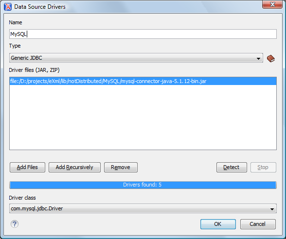

To connect to a MySQL server, you need to create a generic JDBC type data source based on
the MySQL JDBC driver available on the MySQL website.
To configure this data source, follow these steps:
-
Go to https://www.oxygenxml.com/database_drivers.html and download the appropriate MySQL driver.
-
Open the
Preferences dialog box and
go to Data Sources.
-
Click the
 New
button in the Data Sources panel.
New
button in the Data Sources panel.
The dialog box for configuring a data source is opened.
Figure 1. Data Source Drivers Configuration Dialog Box

-
Enter a unique name for the data source.
-
Select Generic JDBC in the driver Type drop-down
list.
-
Click the Add Files button and select the MySQL driver file that
you downloaded.
The driver file for the MySQL server is called
mysql-com.jar.
-
Select the most appropriate Driver
class.
-
Click the OK button to finish the data source
configuration.
-
Continue on to configure your MySQL connection.